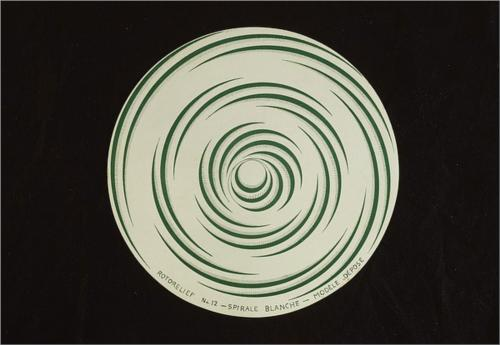
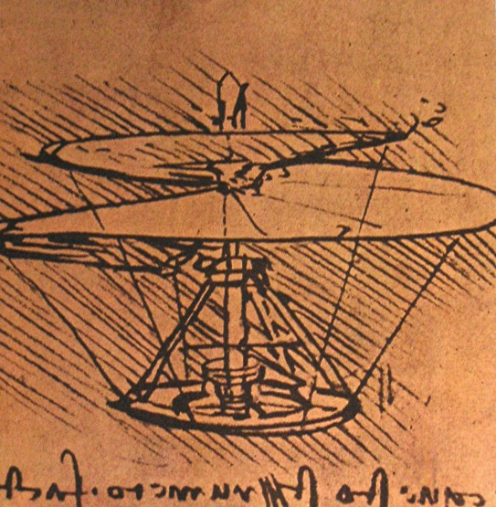
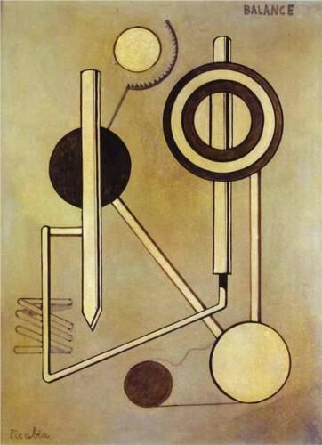
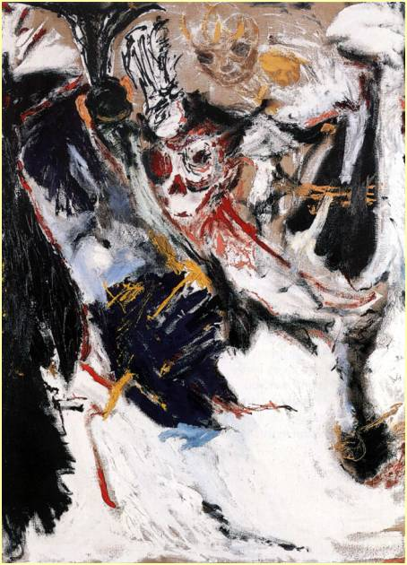
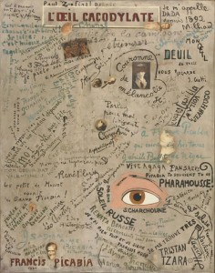
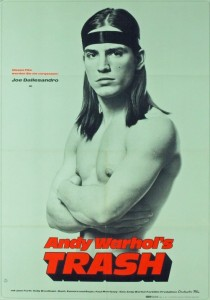
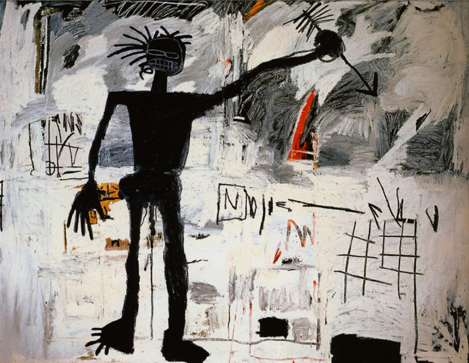
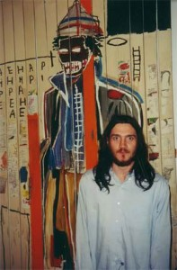
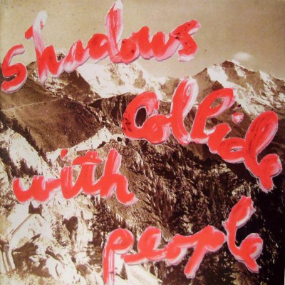

Bez sztuki świat byłby tylko w połowie tak wspaniałym miejscem
John Frusciante jest jednym z tych muzyków, którzy intensywnie poszukują inspiracji w sferze sztuk wizualnych: malarstwa, rysunku, fotografii, filmu. Wymienianych przez niego w wywiadach artystów starczyłoby na całkiem przyzwoity podręcznik historii sztuki, sam też próbował swoich sił jako malarz w okresie gdy opuścił Red Hot Chili Peppers. Nie można też nie zauważyć, że to właśnie wzorując się na ulubionych artystach kształtował swój reżim twórczej pracy.
Nasycenie swojej rzeczywistości pięknem: muzyką, sztuka, filmami, książkami zawsze było dla Johna Frusciante bardzo istotną kwestią. „Zawsze byłem zafascynowany mechanicznymi obrazami i rysunkami Francisa Picabii, albo Marcela Duchampa, ich koncepcje są mi bliskie. Albo architektoniczne rysunki Leonardo Da Vinci. Wszystkie te prace inspirują mnie intelektualnie […] Uczucia płynące z tych prac powodują pragnienie tworzenia czegoś nowego. To jest moje podejście do muzyki.”

Marcel Duchamp, Rotorelief nr 11 Total eclipse, Rotorelief nr 12 White spiral, 1935

Leonardo Da Vinci, projekt machiny latającej, 1500

Francis Picabia, Balance, 1919
John znalazł wiele analogii między etosem pracy wielkich malarzy, a swoim podejściem do tworzenia muzyki.
Leonardo da Vinci cenił za konsekwentne badanie tego samego tematu, za wykonywanie setek anatomicznych szkiców utrwalających ludzkie rysy, mimikę, emocje. Podobnie postrzegał twórczość Van Gogha czy impresjonistów – malowanie dziesiątek wariantów tych samych pejzaży, różniących się jedynie światłem wynikającym z pory dania czy pogody, śledzenie delikatnych różnic wynikających z kąta padania światła czy pory roku postrzegał jako mozolne, ale owocne szlifowanie artystycznego warsztatu, niezbędne jego zdaniem również muzykom. Tak jak malarze odtwarzali rzeczywistość widzialną po to, by móc finalnie malować ją z pamięci lub tworzyć całkowicie wymyślone sceny czy pejzaże, tak on ćwiczył różne piosenki w różnych muzycznych stylach, by móc w pełni świadomie tworzyć własne melodie, łączyć nuty w sekwencje oddające określone emocje i nastroje. Ten aspekt technicznej kontroli, pozwalającej na świadome kształtowanie dzieła był dla niego niezmiernie istotny.
W 2004 roku w wywiadzie dla kanadyjskiej gazety Le Soleil mówił: „Jego (Leonardo) podejście było niesamowicie skrupulatne, drobiazgowe i ja podobnie jestem niestrudzonym pracownikiem, który chce tworzyć pewne struktury czy nastroje mając nad tym jak najwięcej technicznej kontroli. Tak jak Da Vinci pracuję nad perspektywą, nad relacją między światłem i cieniem.” Tak dalece, by traktować swoją gitarę jak pędzel? “W przeszłości, gdy grałem, wizualne skojarzenia przychodziły mi do głowy i próbowałem znaleźć korespondujące z nimi dźwięki.”
Fascynacja autorem Mony Lizy znalazła swoje odbicie w klipie do piosenki Californication RHCP – animowana postać Johna biegnie przez filmowe studio, gdzie powstaje kostiumowy film o Leonardo i lata zaprojektowaną przez niego machiną latającą.
Ubóstwiam sztukę
Kogo John Frusciante wymienia wśród swoich ulubionych artystów? Poza Da Vincim fascynowali go przede wszystkim twórcy europejskiej awangardy przełomu XIX i XX wieku. „Lubię wszystkich surrealistów i dadaistów, np. Maxa Ernsta. Bardzo lubię malarstwo kubistów: Braque`a, wczesne prace Picassa. Kocham obrazy Van Gogha. Kocham Cy Twombly`ego i prace Francisa Picabii, które stworzył w 1918 roku: mechaniczne malarstwo i rysunki – one razem z pracami Duchampa są chyba moimi ulubionymi obrazami. Także obrazy Dona van Vlieta, twórcy Captain Beefheart, zawsze mocno do mnie przemawiały; to wspaniałe dzieła. Kocham je bardzo.”

Dona Van Vliet, Check Bif
Propagowaną przez surrealistów metodę „automatic writing” – szybkiego, spontanicznego zapisywania myśli i tworzenia poezji – stosował pisząc teksty i grając, zresztą nawet płyty efemerycznego projektu Ataxia, zrealizowanego z Joe Lallym i Joshem Klinghoferem zatytułowane zostały właśnie „Automatic Writing”. Sama Ataxia to termin zaczerpnięty z książki greckiego architekta i kompozytora Iannisa Xenakisa. “Ataxia oznacza zaburzenie. To słowo ładnie wygląda i lubię jego brzmienie. Oznacza to samo, co tytuł piosenki Joy Division „Disorder”. To też mnie zachwyciło, bo Joe, Josh i ja jesteśmy oddanymi fanami tej grupy. Ataxia to symboliczne słowo dla naszej trójki.” – wyjaśniał na łamach japońskiego magazynu Rockin`On w 2004 roku.

Francis Picabia, Cacodylic Eye, 1921
Znany zapewne wszystkim fanom Johna Frusciante esej “Creative Act”, opublikowany w 2013 roku na jego stronie internetowej, to nie tylko wyjaśnienie frazy “Will To Death”, ale także swoisty dialog z identycznie zatytułowanym wykładem Marcela Duchampa, wygłoszonym w 1957 roku podczas konwencji American Federation of Arts w Houston. Jego tekst można znaleźć tu:
http://www.brainpickings.org/index.php/2012/08/23/the-creative-act-marcel-duchamp-1957/
O tym, że John nadal ceni sobie twórzość surrealistów i dadaistów świadczy klip do kawałka Deja Vu Black Knights.
Szachowy pojedynek Rugged Monka i Crisisa Tha Sharpshootera został zmiksowany z fragmentami kilku słynnych awangardowych filmów, m. in.
Zaś sam motyw szachowej rozgrywki wydaje się nawiązaniem do „8×8.A. Chess. Sonata” Jeana Cocteau i Hansa Richtera
Frusciantego fascynowali też twórcy z kręgu fabryki Andy`ego Warhola, choć króla pop artu cenił wyżej jako reżysera niż jako malarza. Wielokrotnie chwalił jego filmy w wywiadach, kolekcjonuje ich plakaty, a warholowską supergwiazdę Nico określił jako „najpiękniejszą kobietę świata”.

W klipie „The Past Recedes” na ścianie domu Johna możemy zobaczyć m. in. plakat do filmu „Trash” wyreżyserowanego przez Warhola.
Zdecydowanie bardziej, niż chłodny pop-art. odpowiadała mu ekspresja prac Basquiata, pierwszego popularnego czarnoskórego amerykańskiego artysty, który od malowania ulicznego graffiti błyskawicznie przeszedł do tworzenia pełnych gniewu i tajemniczych symboli obrazów. Jego własne prace najbliższe są zdecydowanie właśnie twórczości Basquiata – dwudziestoparolatka tragicznie zmarłego na skutek przedawkowania narkotyków.

Jean-Michel Basquiat, Autoportret, 1982

John Frusciante na wystawie Basquiata
Innym artystą z warholowskiej świty, którego podziwiał był Rene Ricard – jego kaligraficzne “poetry painting” zastosował na okładce płyty “Shadows Collide With People”. „Moja była dziewczyna Stella, która jest córką Juliana Schnabela, jest dobrą przyjaciółką René. Można powiedzieć, że szybko zacząłem identyfikować się z jego obrazami, najbardziej podobały mi się jego zdobione słowa. […] Gdy byłem jeszcze ze Stellą, wisiał w jej domu jeden z obrazów René. Ten obraz oddawał dokładnie to uczucie, które dawała mi muzyka, gdy byłem małym dzieckiem. Nie umiem tego ubrać w słowa. Kiedy patrzyłem na ten obraz, odczuwałem w nim tę samą estetykę, która wytworzyła się w mojej głowie, kiedy zaczynałem tworzyć muzykę. Sprawiło to, że chciałem, aby jego dzieło stało się okładką mojej płyty.”
Neoekspresjonizm był mu bliski choćby przez kontakty z rodziną Schnablów: Julianem, Lolą Montes i Stellą – również malującymi w tym stylu. To John doprowadził do tego, że portret Stelli namalowany przez Juliana trafił na okładkę „By The Way. „W pewnym okresie niemal oszalałem na myśl co zrobić z tą okładką. Pewnego ranka zadzwonił Julian i powiedział, że może zrobić coś dla nas. Powiedziałem: Ok, zrób to!”.


Podróżując po światowych trasach z RHCP, John zamiast nocnych klubów zwiedzał raczej muzea i galerie. Wielokrotnie opowiadał o tym w wywiadach: wystawa zdjęć Diane Arbus w Nowym Jorku, ekspozycja obrazów Rene Ricarda i pałac Baubourg w Paryżu, Tretjakowska Galeria w Moskwie to tylko kilka konkretnie wskazanych miejsc, do których się wybrał.
Malowałem przez trzy dni
Jak doszło do tego, że John zaczął sam malować? Możliwe, że stało się to pod wpływem Toni Oswald, jego długoletniej partnerki. Toni reżyserowała spektakle teatralne, tworzyła filmowe scenariusze, pisała wiersze, fotografowała, zapełniała rysunkami dziesiątki szkicowników. Jej artystyczne zainteresowania inspirowały Johna – on zaś rewanżował się jej nauką gry na gitarze. John wystąpił w konceptualnym filmie „Shape of the Desert”, Toni wykonywała tajemnicze wokalizy w piosenkach z „Niandra La Des and Usually Just a T-shirt” i zrobiła słynne okładkowe zdjęcie. W jednym z wywiadów Toni wspomina ich wspólne podróże i ogromne bagaże pełne książek, malarskich przyborów oraz płyt i instrumentów muzycznych. Jednak najsilniejszym impulsem do malowania stało się porzucenie RHCP. „Po odejściu z zespołu,” wyjaśniał w 1997 dziennikarzowi Bikini „byłem bardziej zainteresowany malowaniem niż graniem muzyki. Potrafiłem malować trzy dni z rzędu i zasypiać z twarzą na obrazie. Zupełnie przestałem grać, ale potem zacząłem sobie podczas malowania podśpiewywać do wtóru puszczanym płytom i po pewnym czasie znów wziąłem do ręki gitarę, by nagrywać kawałki w domu.”
Malarskie “ciągi” nie były jedynymi, które zdarzały się Johnowi w tamtym czasie. Na filmie “Stuff” Johnny Deep i Gibby Haynes z fascynacją pomieszaną z przerażeniem dokumentują skrzyżowanie malarskiej pracowni z narkomańską meliną w które Frusciante zamienił swój dom.
Tuby, puszki i słoiki z farbami w nieładzie walają sie po podłodze pośród innych śmieci, wszędzie pełno obrazów, które podobnie jak obłąkańczo śpiewane i zagrane piosenki ze „Smile From The Streets You Hold” obnażają bez zahamowań cierpiącą duszę Johna. Grube wartwy akrylowej farby i wyraziste krechy pasteli przypominają rysunki obłąkanych dzieci, ujawniają istnienie groźnych nadprzyrodzonych sił – duchów o których tyle razy wspomianał Frusciante. “W przypadku malarstwa nigdy nie wiesz kiedy przydarzy się coś cholernie przerażającego. [...] Gdy malujesz, duchy z innego wymiaru przychodzą prosto do Twojej rzeczywistości i domagają się uwagi.”(Bikini, 1997)
Slideshow obrazów Johna
Jednak groźniejszy niż duchy okazał się sam dla siebie John. W przypadkowo wznieconym pożarze przepadają zarówno jego gitary, jak i zdecydowana większość obrazów. W 2004 roku wspomina w rozmowie z fanami tajemniczą znajomą, która wzięła od niego kilka z nich i zerwała z nim kontakt. Wiadomo też, że kilka prac podarował Louisowi Mathieu – długoletniemu tour managerowi RHCP.
Malarska twórczość Johna została udokumentowana w wydanej w 1994 roku książce Jima McMullana “Musicans as Artists”. Znalazły sie w niej jego trzy prace – w tym jedna namalowana wspólnie z córką Flea, Clarą. Pod koniec lat 90. odbyła sie w Zero Gallery w Los Angeles wystawa obrazów Johna (wizytę na niej i spotkanie z Johnem opisał w „Bliźnie” Anthony Kiedis) – to, co możemy znaleźć z malarskiej twórczości Frusciante w Internecie to głównie reprodukcje prac na niej właśnie prezentowanych.
Niestety szanse na wystawę obrazów Johna mamy jeszcze mniejsze, niż na jego koncert – malowanie porzucił świadomie wracając po raz drugi do Red Hot Chili Peppers, gdyż jak sam stwierdził tworząc muzykę jest w stanie bardziej precyzyjnie wyrazić swoje wizje i emocje, niż był w stanie to zrobić przy pomocy pędzla. Na pocieszenie zostają nam okładki płyt, które ozdobił własnymi pracami: “Smile From The Streets You Hold” oraz ujawniające wpływy Rene Ricarda “Letur-Lefr” i „PBX Funicular Intaglio Zone”. Nawiązanie do malarstwa pojawia się także na okładce „Enclosure” – John klęcząc na podłodze maluje wokół siebie czerwony okrąg – symbol odcięcia od zewnętrznego świata.
Jestem jednym z nich
John możliwość obcowania ze sztuką zawsze przedstawiał jako jedną z najważniejszych spraw w swoim życiu. Ale też wydaje się, że pojmowanie roli artysty jako kogoś kogo działanie daje ludziom radość i budzi pozytywne emocje pozwoliło mu zaakceptować swój status niezwykle popularnego muzyka w okresie ponownego dołączenia do Red Hot Chili Peppers.
“Odkąd byłem małym dzieckiem przeglądanie pism i czytanie książek o gwiazdach rocka, lub, gdy byłem już dorosły, czytanie ksiązek o malarzach to były rzeczy które mnie uszczęśliwiały. Nie ma dla mnie na świecie innych wzorców wartych naśladowania bardziej niż artyści: zarówno pisarze, jak muzycy czy malarze. Oni czynią mnie szczęśliwym. A ja jestem jednym z nich, wiesz? Jestem tu dla ludzi, dla których mogę coś znaczyć, wiesz? Dam im tak dużo siebie, jak będą chcieli, ponieważ wiem jak ważne to jest dla mnie.” – wyjaśniał dziennikarzowi Hit magazine w 2000 roku.
I mimo, że z czasem zanegował rolę gwiazdy i postanowił tworzyć muzykę solo, wydaje się, że nadal czuje się zobligowany do tego, by jako artysta być jak najlepszym wzorem do naśladowania.
Autor tekstu: Wanda Modzelewska
Edycja tekstu: Marcin Rudnik
Źródła: